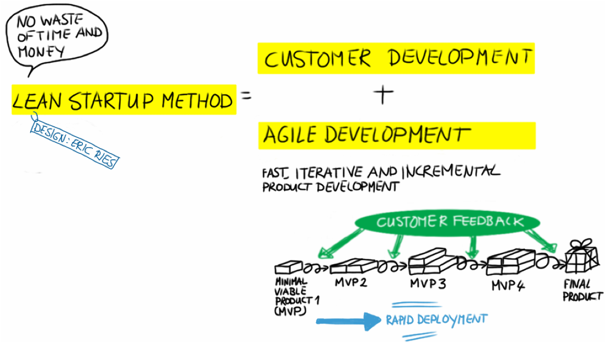
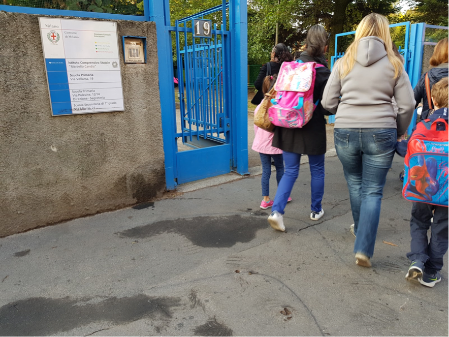
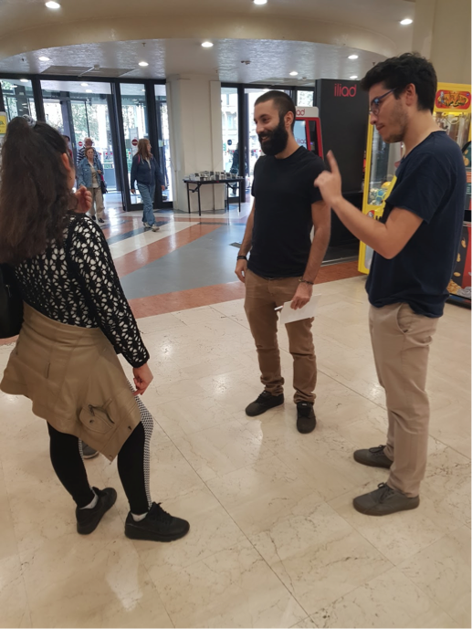
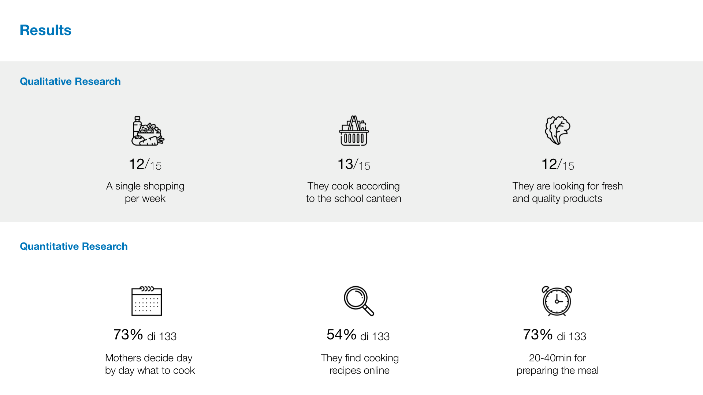
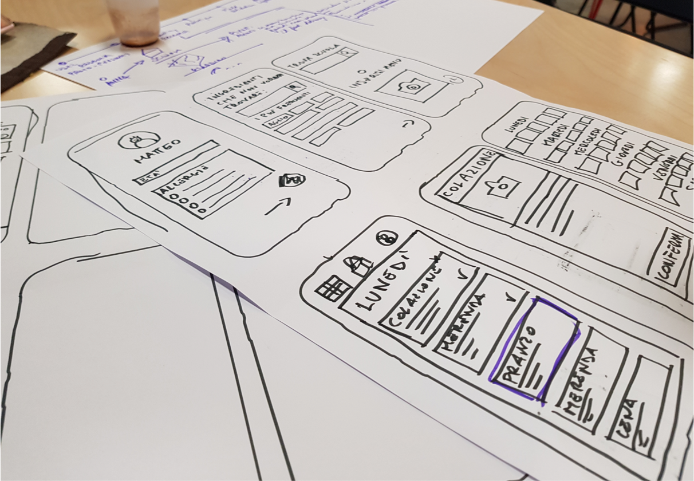
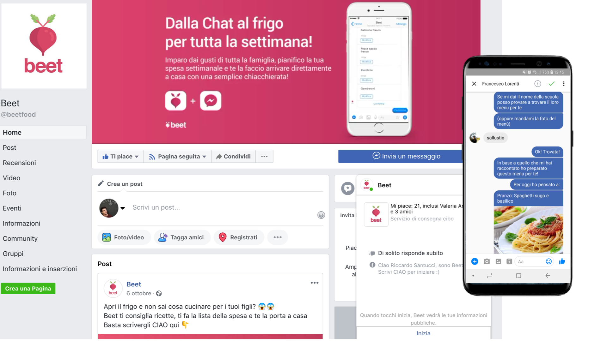

Interaction Design
Francesco Lorenti
Riccardo Santucci
The Challenge
Food delivery is one of the most dynamic sectors of catering that has now expanded its borders
to increasingly personalized offers. In 2018 more than one Italian in three (37%) used a digital
platform to order food from the telephone or computer, with an increase of 47% over the
previous year.
Our team was given the problem of evaluating a parent's experience in food delivery platforms.
The Solution
We created Beet, a chatbot based on the Messenger platform. Beet through
some starting questions, learn the tastes of the family, recommend the
kitchens to do, plans your weekly shopping and gets it directly to your home.
Design Process: Lean Startup Machine
Lean startup is a methodology for developing businesses and products, which aims to shorten
product development cycles and rapidly discover if a proposed business model is viable. this is
achieved by adopting a combination of business-hypothesis-driven experimentation,
iterative product releases (MVP), and validated learning.

Protopersonas & Coustomer Journey
Anna The Super Mama
Anna is a 45-year-old mother who work 8 hours a day and she often can’t prepare meals for her children
due to her numerous commitments. She often happens to order on the app for the whole family. It generally
uses Foodora or Uber Eats. When she orders, she is interested in the quality of the food and is attentive to
the ingredients in the dishes

User Research: Qualitative research
We conducted a field research dividing it
into two different phases.
First Phase
In the first phase we wanted to validate
our proto-personas.
The first phase of research was carried out
on the first day at 8.00 am in front of the
school entrance in Via Vallarsa, carrying
out 15 interviews on the use of Food
Delivery apps.The main result of the first phase was to
invalidate the proto-personas and build a new
personas based on the insights of the research.
Second Phase
The second phase of research was carried out
on the same day from 12 to 17 in the referring
personas. 13 interviews were carried out with
the focus on the organization of weekly
shopping and preparing meals for the family.


User Research: Quantitative Research
At the same time as qualitative research we carried out quantitative research in the form of an online
survey. The form was promoted in the Facebook page “Mamme di Milano" "MammeMi" "MamiClub" "Zone
4, Mamme e papà di Milano”.
To share the form on the closed facebook page, we used a Facebook account of a team member's mother

First Prototype: Paper Prototype
App for planning weekly meals
We have made a paper prototype to understand the whole flow. The interface, through registration and
some questions, recommends a weekly menu that you can browse and modify.

Problem
Most of our users do not use apps, or at least not on an ongoing basis
Second Prototype: Chatbot on Messenger
Planning and spending service through chat
We have created a sponsored facebook page and a landing page to land our user in the chat
and start the conversation to plan meals according to school lunches, recommend meals to
cook and shop directly from the chat.

User Testing
We conducted an agile test with our
reference personas
There were 5 tests of about 10 minutes
each one at the elementary school exit
and inside the supermarkets.
For the test we used a "Wizard of Oz"
approach
Chatbot responses were manually written by a
team member remotely while two other team
members were on the field to prove the actual
interaction
Make the chatbot
Building of a real chatbot using chatfuel.
We coded our own chatbot using the tool Chatfuel and we
actually implemented it in our own Facebook page “Beet”